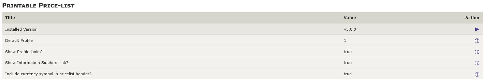
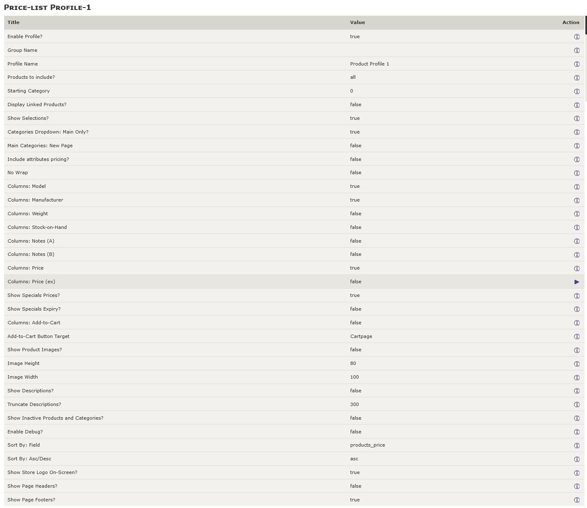
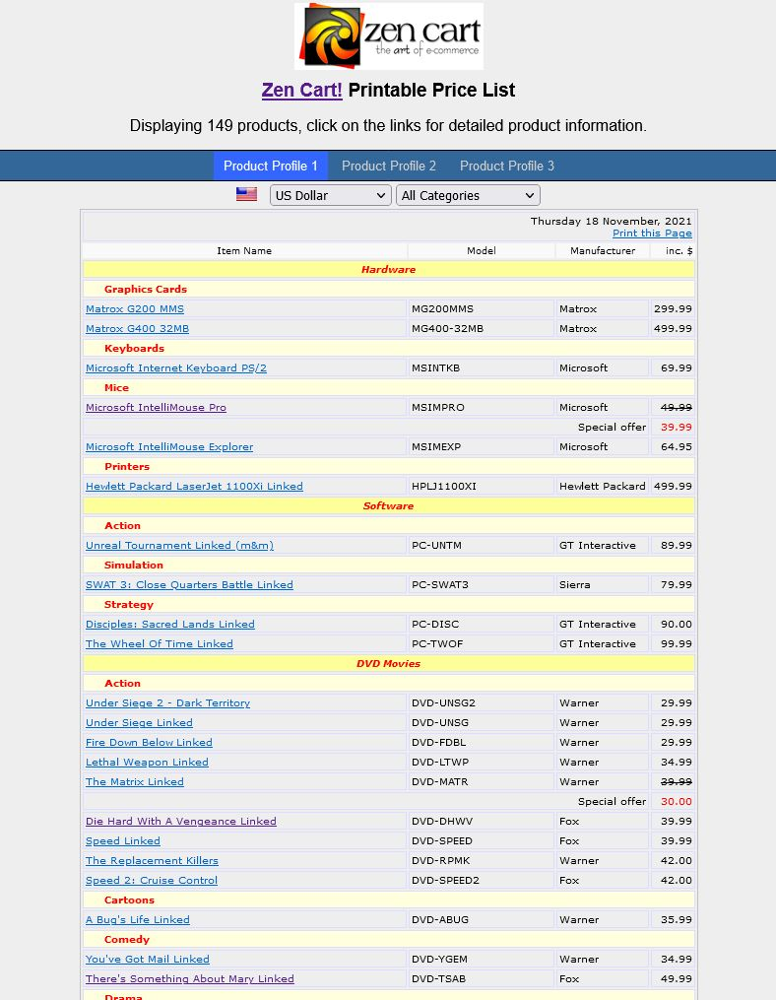

Printable Price List — for Zen Cart v1.5.7 and later
Version 3.0.0. Copyright © 2014-2021, Vinos de Frutas Tropicales
Current Support Thread at Zen Cart Forums: https://www.zen-cart.com/showthread.php?49126-Printable-Price-list-support-thread
Note: This plugin's file-set includes a new folder: /includes/templates/template_default/pricelist. If your store creates debug-log files similar to the following upon an access to http://www.example.com/index.php?main_page=pricelist, you'll need to check the permissions assigned to this new folder and its associated files: 755 and 644, respectively.
PHP Warning: require(includes/templates/template_default/templates/tpl_pricelist_default.php): failed to open stream: No such file or directory in {filesystem}/includes/templates/template_default/common/tpl_main_page.php on line xxx
Credits
This version of the plugin is based on v1.5.0 of the like-named plugin for the Zen Cart v1.3.x series, created by:
- Rinalds Uzkalns (a small part of the code is still based on his osc list)
- Development: Carine Bruyndoncx (osC) & Paul Mathot (paulm) (osC&zen)
- Hubert and Vartan Kat for the "add to cart" buttons code
Known Limitations
The following features, requested within the plugin's support thread, are not currently supported:
- Attributes' display and pricing.
- Integration with the "Dual Pricing" plugin.
What it does
This plugin provides, as its name implies, a printable price-list that your customers can view and/or print. Once the plugin's files are installed, you can configure your store's price list display using the new configuration screens created by the install.
Configuration
Admin-Level Configurations
Once the plugin is installed, there are four (4) new configuration groups available in your admin's Configuration dropdown menu:
- Printable Price-list — this group contains common settings for all price-list profiles.
- Price-list Profile-1 — this group contains configuration settings for profile#1.
- Price-list Profile-2 — this group contains configuration settings for profile#2.
- Price-list Profile-3 — this group contains configuration settings for profile#3.
The common settings display as:

The profile-based settings allow you to configure up to three (3) different views of the price-list and/or limit a specific price-list view to a customer group (using the Customers->Group Pricing settings). Each of the profile-specific settings display in their own page:

Store-Side Configuration

From your Zen Cart store, you access the pricelist by navigating your browser to https://www.example/index.php?main_page=pricelist. Alternative profiles can be accessed directly by adding the profile's ID to the URL: https://www.example.com/index.php?main_page=pricelist&profile=3. If the price-list is installed solely for the store administrators' use, you're finished.
If you want your customers to be able to access the price-list, you'll want to add a link to the price list:
- Using EZ-pages. Set the Internal Link URL to index.php?main_page=pricelist. You might want also to choose Open New Window to Yes since the price list is usually not integrated into the store's look-and-feel.
- Enable the "Information" sidebox link using the setting available in Configuration->Printable Price-list.
The price-list displays in a format similar to the sample image to the left.
Installation
This plugin currently has no core-file overwrites; you should always backup your cart's database and files prior to making any changes.
- Unzip the plugin's package file, which you've most likely already done if you're reading this!
- Rename the /YOUR_ADMIN folder to match your Zen Cart admin folder name.
- Rename the /includes/modules/sideboxes/YOUR_TEMPLATE folder, changing YOUR_TEMPLATE to match your current template's name. If your current template already includes changes to the information.php sidebox, you'll need to merge those pre-existing changes with the change introduced by this plugin.
- Sign into your Zen Cart admin console.
- Copy the plugin's files to your store's file system.
- /includes/extra_definitions/pricelist_filenames.php
- /includes/languages/dutch/pricelist.php
- /includes/languages/dutch/extra_definitions/printable_pricelist_extra_definitions.php
- /includes/languages/english/pricelist.php
- /includes/languages/english/extra_definitions/printable_pricelist_extra_definitions.php
- /includes/modules/pages/pricelist/header_php.php
- /includes/modules/sideboxes/YOUR_TEMPLATE/information.php
- /includes/templates/template_default/pricelist/html_header.php
- /includes/templates/template_default/pricelist/profile-1.css
- /includes/templates/template_default/pricelist/profile-2.css
- /includes/templates/template_default/pricelist/profile-3.css
- /includes/templates/template_default/pricelist/stylesheet.css
- /includes/templates/template_default/pricelist/tpl_box_default.php
- /includes/templates/template_default/sideboxes/tpl_main_page.php
- /YOUR_ADMIN/includes/auto_loaders/config.printable_price_list_admin.php (Added in v3.0.0)
- /YOUR_ADMIN/includes/functions/extra_functions/init_price_list_admin.php (No longer used, v3.0.0 and later)
- /YOUR_ADMIN/includes/init_includes/init_price_list_admin.php (Added in v3.0.0)
- /YOUR_ADMIN/includes/languages/english/extra_definitions/printable_pricelist_menu_definitions.php
- Refresh the screen in your Zen Cart admin console by clicking the "Admin Home" link; the configuration settings for the Printable Price-list will auto-install.
Version History
- v3.0.0, 2021-11-18 (lat9):
- CHANGE: Minimum Zen Cart version is now zc157.
- BUGFIX: Include 'date_added' when creating initial configuration settings.
- BUGFIX: Correct PHP warnings issued if no pricing is to be displayed.
- BUGFIX: Correctly display prices with/without tax, based on the site's configuration setting.
- BUGFIX: Product pricing now includes any updates for products priced by attributes.
- CHANGE: Price-lists can now be configured for featured, special or sub-category products' listings.
- CHANGE: Only categories with products are now displayed.
- CHANGE: Now displaying products' options' with pricing.
- CHANGE: Products' images (if configured) now display next to the product's name, no more location randomization.
- v2.0.3, 2016-01-24 (lat9):
- BUGFIX: Price (inc) not properly calculating the included tax.
- v2.0.2, 2016-01-13 (lat9):
- BUGFIX: Price (ex) not displayed if Price (inc) not displayed, too.
- v2.0.1, 2015-07-24 (lat9):
- BUGFIX: Corrected the name of /includes/templates/template_default/pricelist/profile-1.css (was proile-1.css).
- BUGFIX: Include missing language /extra_definition files.
- CHANGE: Open pricelist in a new window when Information sidebox link is clicked. Changed /includes/modules/sideboxes/YOUR_TEMPLATE/information.php.
- CHANGE: Add configuration switch to enable/disable display of the currency symbol in the pricelist display's header. Changed /YOUR_ADMIN/includes/functions/extra_functions/init_price_list_admin.php and /includes/templates/template_default/pricelist/tpl_main_page.php.
- CHANGE: Added permissions-check notice to the top of this readme.
- v2.0.0, 2014-10-26 (lat9): Initial release for Zen Cart v1.5.1 and later. The following changes were introduced:
- Converted separate SQL installation script into an admin auto-loaded script.
- Re-structured to make use of current browsers' ability to handle proper printing of web-pages via CSS media-print styling. Many configuration settings from previous versions are no longer required!
- v1.5.0, 2007-12-20 (paulm): Last update for the Zen Cart v1.3.x series. Refer to that plugin's readme.txt for additional change history.